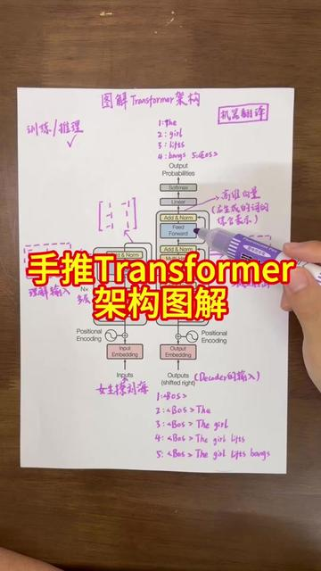

手推Transformer（3）架构图解
来源：抖音·视频 归档日期：2026-09-24 抓取状态：成功 原文字符：28889｜配图：30 张
摘要速览
- 抖音视频《手推Transformer（3）架构图解》，Transformer 系列教程第 3 讲，主题为架构图解。
- 视频无文字稿；按原文铁律不以标题描述冒充正文，留待文稿/字幕可得时补。
核心内容
（待补充——视频无文稿，不伪造正文）
可执行启发
- （待补充）
我的想法
（待补充）
原文沉淀
目录
- 推荐视频
- 1万洪涛同学LovTech
- 研究生必备科研工具#科研工具 #研究生 #科研干货
- 6万江枫
- 1万刘海儿在风中飘荡
- 2万晓辉博士
- 6万极简AI（3%）
- 多模态大模型是如何实现的 #多模态 #交叉注意力 #AI #AI计划 #clip
- Workbuddy + nature skill 绘图 科研绘图全流程指南
读屏标签已关闭


下载抖音精选
2026 © 抖音
[
京公网安备11010802050006号](https://beian.mps.gov.cn/)
[
电子营业执照](https://zzlz.gsxt.gov.cn/businessCheck/verifKey.do)
信息网络传播视听节目许可证 0126733
广播电视节目制作经营许可证 （京）字第11313号
增值电信业务经营许可证 京B2-20170846
网络文化经营许可证 京网文〔2025〕0181-061号
互联网宗教信息服务许可证 京（2025）0000017
药品医疗器械网络信息服务备案 （京）网药械信息备字（2023）第00570号
互联网新闻信息服务许可证 11220230001

违法和不良信息举报 400-140-2108 feedback@douyin.com
算法推荐专项举报 sfjubao@bytedance.com
体育饭圈专项举报 tyfq@bytedance.com
transformer模型训练全流程
充钻石
壁纸
通知
**
消息
投稿
未登录
登录后即可观看喜欢、收藏作品
我的喜欢
我的收藏
观看历史
稍后再看
我的作品
我的预约
我的订单

暂停
00:07 / 06:46 直播
章节要点1：引言
登录后可发布弹幕
发送
00:00
引言
进入全屏H
网页全屏Y
0
截图
小窗模式U
字幕
- 不开启
稍后再看L
倍速
登录后即可切换倍速立即登录
高清 1080P登录即享
高清 720P
标清 540P
智能
智能
清屏
清屏J
连播
自动连播K
5741
63
4115
832
听抖音
个人观点，仅供参考
**
重播
3s 后播放
通俗易懂地讲解什么是Agent？ 从0到1搭建一个简易Agent，从小白的角度出发解释Agent是如何运行的？ #agent #AIagent #LLM #AI教程 #AI新星计划
3s 后播放下一个视频
3s 后循环播放当前视频
点击按住可拖动视频
章节要点
Transformer架构的图解，包括Encoder和Decoder两部分。Encoder负责理解输入，Decoder负责生成输出。Transformer最初用于机器翻译，后来被广泛应用于语言模型。通过词嵌入、位置编码、多头注意力机制、残差连接归一化和前馈神经网络等操作，Transformer能够有效地处理序列数据。
00:00
引言
00:31
常见误区
Transformer最初用于机器翻译，后来被发现适合语言模型，从而诞生了大语言模型。
01:09
架构概述
Transformer架构分为Encoder和Decoder两部分，用于机器翻译，训练和推理时Decoder输入来源不同。
01:49
Encoder
Encoder负责理解输入，经过多次计算得到包含上下文信息的语义矩阵。
02:55
Decoder
Decoder负责生成输出，通过带掩码的自注意力和交叉注意力，逐步生成翻译结果。
06:11
结语
内容由AI生成
手推Transformer（3）架构图解 #Transformer #编码器 #解码器 #大模型原理 #ai新星计划
5741
63
4115
832
举报
发布时间：2026-08-28 07:10
刘海儿在风中飘荡
粉丝1.3万获赞4.6万
推荐视频
- ［图：通俗易懂地讲解什么是Agent？ 从0到1搭建一个简易Agent，从小白的角度出发解释Agent是如何运行的？ #agent #AIagent #LLM #AI教程 #AI新星计划］
15:06
播放中
通俗易懂地讲解什么是Agent？ 从0到1搭建一个简易Agent，从小白的角度出发解释Agent是如何运行的？ #agent #AIagent #LLM #AI教程 #AI新星计划
1万洪涛同学LovTech
- ［图：认识WorkBuddy-保姆级入门到精通教程 #AI智能体 #Agent #Workbuddy #AI办公］
06:01
播放中
认识WorkBuddy-保姆级入门到精通教程 #AI智能体 #Agent #Workbuddy #AI办公
554晓墨AIGC
- 
03:58
播放中
5.6 升级 GPT6 Astra，PCB 到底提升了什么？ 模型能力是基础，工程可控性才是量产落地的关键。下期我们会继续剖析GPT-6 Astra版本工程在技术上还存在哪些问题，欢迎追更。#AI #工科 #高多层PCB #硬件 #嘉立创有料季
5038謓泽
- ［图：Kimi转接Claude，这账到底怎么算？ 高价买回答，再按低价交付，真能省成本吗？#人工智能 #Kimi #Claude #AI工具］
00:56
播放中
Kimi转接Claude，这账到底怎么算？ 高价买回答，再按低价交付，真能省成本吗？#人工智能 #Kimi #Claude #AI工具
603永哥讲 AI
- ［图：WorkBuddy保姆级教学办公三件套。 #WorkBuddy #AI办公 #AI工具 #人工智能 #AI教程］
11:37
播放中
WorkBuddy保姆级教学办公三件套。 #WorkBuddy #AI办公 #AI工具 #人工智能 #AI教程
825张瑞麟AI
- ［图：openclaw智能AI龙虾工具 U Claw2.0pro #人工智能 #龙虾ai #openclaw #黑科技 #ai］
00:23
播放中
openclaw智能AI龙虾工具 U Claw2.0pro #人工智能 #龙虾ai #openclaw #黑科技 #ai
812智能AI便携助手
- ［图：YOLO天塌了，这个开源视觉模型可以做更精细的目标定位 #端侧ai #大模型 #VLX #多模态 #具身智能］
00:30
播放中
YOLO天塌了，这个开源视觉模型可以做更精细的目标定位 #端侧ai #大模型 #VLX #多模态 #具身智能
6936VLX开源社区
- 
01:23
播放中
GPT-6 Astra全自动设计F405六层FPV飞控板 GPT-6 Astra设计FPV无人机飞控 PCB全过程记录，从电路原理图到 PCB 布局、走线、元器件摆放，都是Codex里的GPT-6在 KiCad 里直接操作，我可以看到它一步步画出来。 画完后它自己运行 ERC、DRC，检查问题，再修改电路和布局。 最后完成了 F405 六层飞控板的设计，还导出了 Gerber、钻孔、BOM、贴装坐标和 STEP 文件，能直接打开 3D 看整块板子的效果。 整个设计过程，总耗时3 小时 13 分 56 秒，总token消耗量约为51,900,896个（约5200万个），模型思考强度为高。 目前还没打样，实际能不能稳定工作，还要上板测试。但从描述需求到画出整块 PCB，这个过程已经挺让我惊叹了。 #PCB #KiCad #Codex #GPT6 #Astra
3567去飞GoFly
- ［图：研究生必备科研工具#科研工具 #研究生 #科研干货］
02:11
播放中
研究生必备科研工具#科研工具 #研究生 #科研干货
6万江枫
读博中
- ［图：GraphPad进阶版层叠图 #书霸AI #GraphPad #科研绘图 #研究生 #知识分享］
01:36
播放中
GraphPad进阶版层叠图 #书霸AI #GraphPad #科研绘图 #研究生 #知识分享
311GraphPad大胃袋（良子版）
- ［图：当工科生用gpt画pcb板子 #pcb打样 #pcb线路板 #工科女 #电子 #电赛］
00:16
播放中
当工科生用gpt画pcb板子 #pcb打样 #pcb线路板 #工科女 #电子 #电赛
5967矢口
- ［图：手推Transformer（1）自注意力机制 #大语言模型 #大语言模型原理 #Transformer #自注意力机制］
06:23
播放中
手推Transformer（1）自注意力机制 #大语言模型 #大语言模型原理 #Transformer #自注意力机制
1万刘海儿在风中飘荡
- ［图：生产级PDF文件识别RAG要过4道关，90%的人倒在第一关 #Ai大模型 #大模型 #Agent #大模型面试 #人工智能］
06:20
播放中
生产级PDF文件识别RAG要过4道关，90%的人倒在第一关 #Ai大模型 #大模型 #Agent #大模型面试 #人工智能
5247AI大模型日记
- 
00:28
播放中
数模agent-Beacon开源了 耗时一个月终于vibe coding出来了----Beacon,功能还算可以,可以直接输出latex排版的pdf#ai新星计划 #vibecoding #大学生 #数模 #vibecoding大赏
7940雾离欢
- 
02:05
播放中
Workbuddy + nature skill 绘图 科研绘图全流程指南#科研 #科研工具 #科研绘图 #研究生 #ai工具
567布尔博士
- ［图：脑洞说给AI听，它连电路图和组装说明书都做好了 #AI工具 #机械臂 #外骨骼 #电路设计 #DIY］
00:31
播放中
脑洞说给AI听，它连电路图和组装说明书都做好了 #AI工具 #机械臂 #外骨骼 #电路设计 #DIY
722微微辣不加班
- ［图：新开源image-2.1效果比肩Nano-banana-2 本地部署效果能力增强很多，主要是很多用低端机器+api生成的用户很友好，可以本地去编辑很多在线api不能编辑的图片。#Qwen #comfyui #文生图 #Ai #工作流］
00:42
播放中
新开源image-2.1效果比肩Nano-banana-2 本地部署效果能力增强很多，主要是很多用低端机器+api生成的用户很友好，可以本地去编辑很多在线api不能编辑的图片。#Qwen #comfyui #文生图 #Ai #工作流
588AIGC绘式
- ［图：最近硅谷热议的Jev模型及其影响 最近AI圈广泛热议的Jev模型，是OpenAI的一位研究员用了两年时间研发出来的，一种用于决策和判断场景的快思考模型，比其他模型快一百倍，同时成本只要几百分之一，幻觉率还低。区别于以往LLM基于RLHF的后训练方法，他们采用了RLCD，可校准决策的强化学习，强化模型输出问题的回答和对这个回答的置信度。真是个有创意的方向，而且我觉得接下来价值巨大。#Jev #Jev模型 #RLCD #AI #OpenAI］
07:18
播放中
最近硅谷热议的Jev模型及其影响 最近AI圈广泛热议的Jev模型，是OpenAI的一位研究员用了两年时间研发出来的，一种用于决策和判断场景的快思考模型，比其他模型快一百倍，同时成本只要几百分之一，幻觉率还低。区别于以往LLM基于RLHF的后训练方法，他们采用了RLCD，可校准决策的强化学习，强化模型输出问题的回答和对这个回答的置信度。真是个有创意的方向，而且我觉得接下来价值巨大。#Jev #Jev模型 #RLCD #AI #OpenAI
2万晓辉博士
- ［图：Deepseek+Solidworks,自动绘制复杂机械结构 #Deepseek #solidworks #建模 #codex #skills］
02:02
播放中
Deepseek+Solidworks,自动绘制复杂机械结构 #Deepseek #solidworks #建模 #codex #skills
6万极简AI（3%）
- ［图：多模态大模型是如何实现的 #多模态 #交叉注意力 #AI #AI计划 #clip］
12:18
播放中
多模态大模型是如何实现的 #多模态 #交叉注意力 #AI #AI计划 #clip
2851乙
全部评论
请先登录后发表评论
大家都在搜：ai芯片架构
寻找我的
...
8你讲的太好了。3期视频把我的疑问全部解决了。
作者赞过
2周前·北京
1
分享
回复
i吃菠萝咕噜肉
...
太厉害了，听你的白话版本才理解
[图片: 举手](https://p3-pc-sign.douyinpic.com/obj/tos-cn-i-tsj2vxp0zn/3c34da0d65db47c6933e6b66cc17e5aa?lk3s=343af0a2&x-expires=2105658000&x-signature=EEx6lPFIo1dwlJKfy4LNIMK1keE%3D&from=876277922)
2周前·广东
0
分享
回复
小哈基米
...
FFN的输出怎么变成k和v传递给交叉注意力模块？
2周前·广东
0
分享
回复
小鸭哥
...
博主可以讲讲带因果掩码的自注意力机制吗？
3周前·宁夏
3
分享
回复
不能说
...
刷到讲这个的我是真的又想看又不想看，想看是因为大模型是我的工作，不想看是因为当年写算子的时候这玩意我已经看吐了
3周前·上海
0
分享
回复
登录后即可参与互动讨论
刘海儿在风中飘荡
粉丝1.3万获赞4.6万
推荐视频
- ［图：通俗易懂地讲解什么是Agent？ 从0到1搭建一个简易Agent，从小白的角度出发解释Agent是如何运行的？ #agent #AIagent #LLM #AI教程 #AI新星计划］
15:06
播放中
通俗易懂地讲解什么是Agent？ 从0到1搭建一个简易Agent，从小白的角度出发解释Agent是如何运行的？ #agent #AIagent #LLM #AI教程 #AI新星计划
1万洪涛同学LovTech
- ［图：认识WorkBuddy-保姆级入门到精通教程 #AI智能体 #Agent #Workbuddy #AI办公］
06:01
播放中
认识WorkBuddy-保姆级入门到精通教程 #AI智能体 #Agent #Workbuddy #AI办公
554晓墨AIGC
- 
03:58
播放中
5.6 升级 GPT6 Astra，PCB 到底提升了什么？ 模型能力是基础，工程可控性才是量产落地的关键。下期我们会继续剖析GPT-6 Astra版本工程在技术上还存在哪些问题，欢迎追更。
#AI #工科 #高多层PCB #硬件 #嘉立创有料季
5038謓泽
- ［图：Kimi转接Claude，这账到底怎么算？ 高价买回答，再按低价交付，真能省成本吗？#人工智能 #Kimi #Claude #AI工具］
00:56
播放中
Kimi转接Claude，这账到底怎么算？ 高价买回答，再按低价交付，真能省成本吗？#人工智能 #Kimi #Claude #AI工具
603永哥讲 AI
- ［图：WorkBuddy保姆级教学办公三件套。 #WorkBuddy #AI办公 #AI工具 #人工智能 #AI教程］
11:37
播放中
WorkBuddy保姆级教学办公三件套。 #WorkBuddy #AI办公 #AI工具 #人工智能 #AI教程
825张瑞麟AI
- ［图：openclaw智能AI龙虾工具 U Claw2.0pro #人工智能 #龙虾ai #openclaw #黑科技 #ai］
00:23
播放中
openclaw智能AI龙虾工具 U Claw2.0pro #人工智能 #龙虾ai #openclaw #黑科技 #ai
812智能AI便携助手
- ［图：YOLO天塌了，这个开源视觉模型可以做更精细的目标定位 #端侧ai #大模型 #VLX #多模态 #具身智能］
00:30
播放中
YOLO天塌了，这个开源视觉模型可以做更精细的目标定位 #端侧ai #大模型 #VLX #多模态 #具身智能
6936VLX开源社区
- 
01:23
播放中
GPT-6 Astra全自动设计F405六层FPV飞控板 GPT-6 Astra设计FPV无人机飞控 PCB全过程记录，从电路原理图到 PCB 布局、走线、元器件摆放，都是Codex里的GPT-6在 KiCad 里直接操作，我可以看到它一步步画出来。 画完后它自己运行 ERC、DRC，检查问题，再修改电路和布局。 最后完成了 F405 六层飞控板的设计，还导出了 Gerber、钻孔、BOM、贴装坐标和 STEP 文件，能直接打开 3D 看整块板子的效果。 整个设计过程，总耗时3 小时 13 分 56 秒，总token消耗量约为51,900,896个（约5200万个），模型思考强度为高。 目前还没打样，实际能不能稳定工作，还要上板测试。但从描述需求到画出整块 PCB，这个过程已经挺让我惊叹了。 #PCB #KiCad #Codex #GPT6 #Astra
3567去飞GoFly
- ［图：研究生必备科研工具#科研工具 #研究生 #科研干货］
02:11
播放中
研究生必备科研工具#科研工具 #研究生 #科研干货
6万江枫
读博中
- ［图：GraphPad进阶版层叠图 #书霸AI #GraphPad #科研绘图 #研究生 #知识分享］
01:36
播放中
GraphPad进阶版层叠图 #书霸AI #GraphPad #科研绘图 #研究生 #知识分享
311GraphPad大胃袋（良子版）
- ［图：当工科生用gpt画pcb板子 #pcb打样 #pcb线路板 #工科女 #电子 #电赛］
00:16
播放中
当工科生用gpt画pcb板子 #pcb打样 #pcb线路板 #工科女 #电子 #电赛
5967矢口
- ［图：手推Transformer（1）自注意力机制 #大语言模型 #大语言模型原理 #Transformer #自注意力机制］
06:23
播放中
手推Transformer（1）自注意力机制 #大语言模型 #大语言模型原理 #Transformer #自注意力机制
1万刘海儿在风中飘荡
- ［图：生产级PDF文件识别RAG要过4道关，90%的人倒在第一关 #Ai大模型 #大模型 #Agent #大模型面试 #人工智能］
06:20
播放中
生产级PDF文件识别RAG要过4道关，90%的人倒在第一关 #Ai大模型 #大模型 #Agent #大模型面试 #人工智能
5247AI大模型日记
- 
00:28
播放中
数模agent-Beacon开源了 耗时一个月终于vibe coding出来了----Beacon,功能还算可以,可以直接输出latex排版的pdf
#ai新星计划 #vibecoding #大学生 #数模 #vibecoding大赏
7940雾离欢
- 
02:05
播放中
Workbuddy + nature skill 绘图 科研绘图全流程指南
#科研 #科研工具 #科研绘图 #研究生 #ai工具
567布尔博士
- ［图：脑洞说给AI听，它连电路图和组装说明书都做好了 #AI工具 #机械臂 #外骨骼 #电路设计 #DIY］
00:31
播放中
脑洞说给AI听，它连电路图和组装说明书都做好了 #AI工具 #机械臂 #外骨骼 #电路设计 #DIY
722微微辣不加班
- ［图：新开源image-2.1效果比肩Nano-banana-2 本地部署效果能力增强很多，主要是很多用低端机器+api生成的用户很友好，可以本地去编辑很多在线api不能编辑的图片。#Qwen #comfyui #文生图 #Ai #工作流］
00:42
播放中
新开源image-2.1效果比肩Nano-banana-2 本地部署效果能力增强很多，主要是很多用低端机器+api生成的用户很友好，可以本地去编辑很多在线api不能编辑的图片。#Qwen #comfyui #文生图 #Ai #工作流
588AIGC绘式
- ［图：最近硅谷热议的Jev模型及其影响 最近AI圈广泛热议的Jev模型，是OpenAI的一位研究员用了两年时间研发出来的，一种用于决策和判断场景的快思考模型，比其他模型快一百倍，同时成本只要几百分之一，幻觉率还低。区别于以往LLM基于RLHF的后训练方法，他们采用了RLCD，可校准决策的强化学习，强化模型输出问题的回答和对这个回答的置信度。真是个有创意的方向，而且我觉得接下来价值巨大。#Jev #Jev模型 #RLCD #AI #OpenAI］
07:18
播放中
最近硅谷热议的Jev模型及其影响 最近AI圈广泛热议的Jev模型，是OpenAI的一位研究员用了两年时间研发出来的，一种用于决策和判断场景的快思考模型，比其他模型快一百倍，同时成本只要几百分之一，幻觉率还低。区别于以往LLM基于RLHF的后训练方法，他们采用了RLCD，可校准决策的强化学习，强化模型输出问题的回答和对这个回答的置信度。真是个有创意的方向，而且我觉得接下来价值巨大。#Jev #Jev模型 #RLCD #AI #OpenAI
2万晓辉博士
- ［图：Deepseek+Solidworks,自动绘制复杂机械结构 #Deepseek #solidworks #建模 #codex #skills］
02:02
播放中
Deepseek+Solidworks,自动绘制复杂机械结构 #Deepseek #solidworks #建模 #codex #skills
6万极简AI（3%）
- ［图：多模态大模型是如何实现的 #多模态 #交叉注意力 #AI #AI计划 #clip］
12:18
播放中
多模态大模型是如何实现的 #多模态 #交叉注意力 #AI #AI计划 #clip
2851乙
｜ 违法和不良信息举报：400-140-2108 feedback@douyin.com ｜ 算法推荐专项举报：sfjubao@bytedance.com | 体育饭圈专项举报：tyfq@bytedance.com
｜ 信息网络传播视听节目许可证 0126733
｜ 广播电视节目制作经营许可证 （京）字第11313号
｜ 增值电信业务经营许可证 京B2-20170846
｜ 网络文化经营许可证 京网文〔2025〕0181-061号 ｜
｜ 互联网宗教信息服务许可证 京（2025）0000017 ｜
热门：抖音美食推荐抖音官网剧好侃家里有大学生的，互相转告一下#央国企就业 #央国企招聘 #家长必读 #就业方向甲卷数学解析高考语文必背古诗文朗诵广西595分能上什么大学徐梦桃的卫冕时刻享声MDA3便携解码耳放听感分享天命卦师20#读书第113集：数形结合法是解决零点问题的重要方法。#高考数学 #高中数学 #高中数学妙招 #数学思维 #高考扭扭棒大丽花 教程第一期#扭扭棒花束 #我的手工日常 #教程 #手工 #扭扭棒#lol 这期是教学，大家学习能早日进修峡谷之渊！作为经常跑北滨路，算半个江北人的我，这份女马赛道攻略请收下。#重庆女子半程马拉松#义渡跑团#北滨路
进入全屏
直播加载中
- 创作者中心
归属：[[02-输入/按主题/工具与技术/_index|工具与技术]]